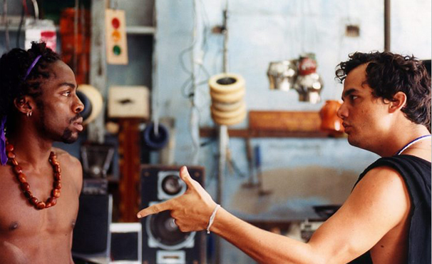

Luís Lázaro Sacramento de Araújo Ramos, nasceu em Salvador no dia 1
de novembro de 1978. É um ator, apresentador, dublador, cineasta e
escritor de literatura infantil brasileiro, que iniciou a carreira
artística no Bando de Teatro Olodum. Durante os anos de 1998 a 2002,
foi âncora do Fantástico. Ganhou notoriedade ao interpretar João
Francisco dos Santos no filme Madame Satã. Lázaro foi indicado ao
Emmy de melhor ator por sua interpretação na novela Cobras &
Lagartos, como Foguinho.
Cinema
- Cinderela Baiana
- Madame Satã
- Carandiru
- O Homem que Copiava
- Meu Tio Matou um Cara
- Ó Pai, Ó
- Medida Provisória

Contato
foguinho@bol.com.br
4002-8922